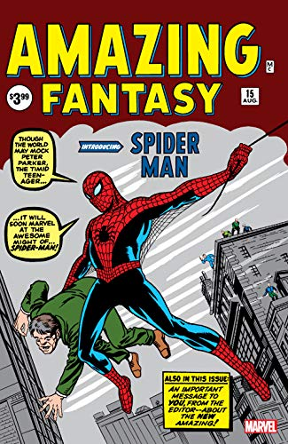

Cronologia Homem-Aranha
Lembrando que isto é apenas uma recomendação de leitura.
Várias das obras aqui citadas não correspondem a ordem de lançamento ou tempo cronológico.
Isso é apenas uma recomendação para entender melhor o personagem!

- ERA STAN LEE & STEVE DIKTO
- Amazing Fantasy #15
- Amazing Spider-Man #01 até #04
- Amazing Spider-Man #06 e #09
- Amazing Spider-Man #10 até #15
- Amazing Spider-Man Annual #01.
- Amazing Spider-Man #17 até #19
- Amazing Spider-Man #20, #25, #28
- Amazing Spider-Man #31 até #33
- ERA STAN LEE & JOHN ROMITA
- Amazing Spider-Man #39 e #40
- Amazing Spider-Man Annual #03
- Amazing Spider-Man #42 e #43
- Amazing Spider-Man #50 até #52
- Amazing Spider-Man Annual #5
- Amazing Spider-Man #87 até #92
- Amazing Spider-Man #96 até #98
- Amazing Spider-Man #100, #101 e #102
- ERA GERRY CONWAY
- Amazing Spider-Man #121 até #122
- Amazing Spider-Man #129
- Amazing Spider-Man #136 e #137
- Amazing Spider-Man #144 até #150